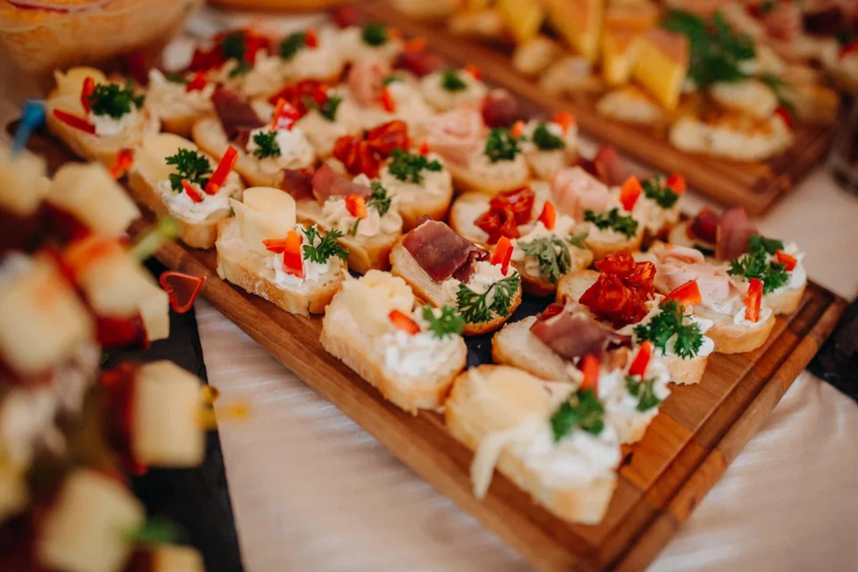

Buffet a domicílio · Cidade Exemplo
Os melhores encontros
começam à mesa.
Do primeiro aperitivo à sobremesa. Explore os cardápios e encontre os sabores para o seu evento.
Fotografias ilustrativas · Ver galeria ↗
Do cardápio à conversa
Vamos planejar seu evento?
Uma pergunta por vez. Você pode voltar, pular o que for opcional e editar antes de continuar.
Antes de combinar
Dúvidas
frequentes.
Posso escolher mais de um serviço?
Sim. Você pode incluir os serviços que quer conhecer e conversar sobre as combinações. Equipe, horários e estrutura serão confirmados na proposta.
E se eu quiser um buffet completo?
Escolha “Quero um buffet completo” no pedido. Isso indica interesse em uma solução para o evento; não inclui automaticamente todos os serviços ou equipamentos.
Preciso ter data e número de convidados definidos?
Não. Neste modelo, você pode começar pedindo orientação e deixar esses detalhes a definir. Eles ajudam a equipe a preparar uma proposta mais precisa quando estiverem disponíveis.
O que preciso confirmar antes de contratar?
Cardápio, equipe, tempo de serviço, utensílios, deslocamento, estrutura e condições de pagamento. Nenhuma reserva é confirmada pelo site.
Como informo uma restrição alimentar?
Marque “Restrições alimentares” no pedido e conte o que precisa. A equipe deve confirmar as opções e as condições de preparo.